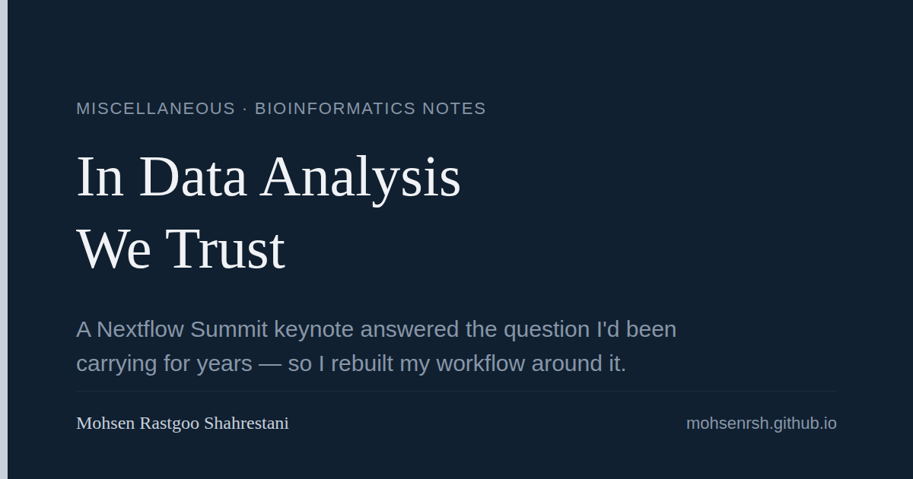

For a while now I've had a quiet background question running through every project: am I organizing this right? Is there a "correct" way to lay out a project, name files, manage environments, and document an analysis, or am I just making it up as I go and hoping nobody asks to reproduce my results?
I never found a satisfying answer. Until I watched Ming "Tommy" Tang's keynote from Nextflow Summit 2026, "In Data Analysis We Trust." It is, as far as I can tell, exactly the talk I had been looking for without knowing it existed.
The talk opens with a number that should stop anyone in bioinformatics: roughly 95% of bioinformatics analyses cannot be reproduced. Not because the science is wrong, but because the data is gone, the scripts were never shared, the methods are too vague to redo, or the environment has quietly drifted since the analysis was run.
It then walks through a real case, the Duke cancer trial scandal, where sloppy data handling, not bad statistics, led to patients being enrolled in a clinical trial based on flawed bioinformatics. That's the moment the talk stopped being about tidiness and started being about responsibility.
From there it lays out six pillars: tidy data, project organization and file naming, version control, environment management, literate programming and automation, and clean code. Each one is presented not as an abstract best practice but as the direct fix for a specific, named failure mode. That framing is what made it click for me. I wasn't being told to be tidier. I was being shown exactly which habit prevents which disaster.
Right after watching it, I sat down with Claude and went through each pillar, one at a time, and turned it into a concrete policy: ISO 8601 dates everywhere, dated and non-destructive result folders, no more _final or _v2 file names, data/ made read-only with chmod u-w -R, here() instead of absolute paths, tidy-data rules for spreadsheets (including the infamous SEPT2/MARCH1 Excel gene-symbol autocorrect trap), commit-often-push-daily as the Git golden rule, renv and uv with committed lock files, Quarto/R Markdown for literate analysis, and the Rule of Three for turning copy-pasted code into functions.
All of it went into my global CLAUDE.md, the file Claude Code reads at the start of every session in any project on my machine. It's no longer a list of vague intentions. It's policy, and Claude applies it by default.
Before I trusted it, I wanted to make sure I hadn't just absorbed buzzwords from the slide titles and missed the substance. So I asked Claude to read through the entire 48-slide deck and cross-check every section of my CLAUDE.md against what was actually said, slide by slide. I had it do this three times, in three separate passes, specifically looking for anything I'd added that wasn't actually in the talk versus things I'd genuinely picked up from it.
Almost everything matched, down to specific details like the Six Git Commands slide, the Reproducibility Spectrum (Level 1 through Level 4), and the "LLM as orchestrator, not analyst" principle with fixed seeds. The one addition that wasn't directly from the talk was my own note about a docs/context/PROVENANCE.md file for tracking where raw data comes from. That's my own working note, not Tommy's, and I'm keeping it labeled that way.
The biggest change isn't any single rule. It's that I stopped doubting. For years I'd second-guess my own documentation, my folder structures, my naming conventions, always wondering if there was a "real" standard I was missing. Now there is one, it's written down, it's specific, and I can point to the exact slide that justifies each choice.
Tommy's stated goal with this talk is to educate and to give people something they can actually use. So I'm sharing my CLAUDE.md publicly, with a README explaining where each section came from and how I verified it. If you've been carrying the same quiet question I was, maybe it helps you too.